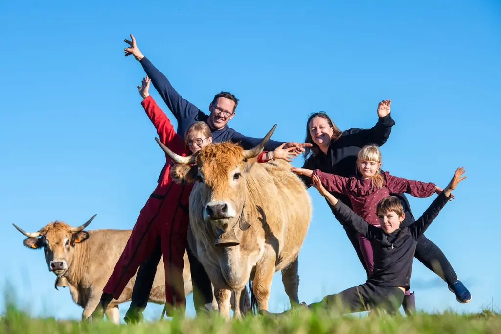

80
Mères Aubrac
Troupeau conduit en sélection et race pure, soigneusement entretenu pour préserver la qualité génétique de la race Aubrac.

La Ferme du Graillou
80 mères Aubrac, race pure, au cœur du Cantal
Rustique, docile et d'une beauté saisissante, la vache Aubrac est parfaitement adaptée aux conditions exigeantes des hauts plateaux du Cantal. À la Ferme du Graillou, elle est élevée dans le respect total de ses besoins naturels.
Troupeau conduit en sélection et race pure, soigneusement entretenu pour préserver la qualité génétique de la race Aubrac.

Exclusivement du foin de prairie naturelle récolté sur la ferme en hiver, et de l'herbe fraîche en libre pâturage en estive.

20 génisses de 2 ans et 20 génisses de 1 an garantissent la pérennité du troupeau et la continuité de l'élevage pour les générations futures.

« L'Aubrac, c'est avant tout une race vivant en harmonie avec son territoire, libre et robuste sur les hauts plateaux du Massif Central. »

À la Ferme du Graillou, les vaches Aubrac ne mangent que ce que la terre leur offre : du foin de prairie naturelle récolté sur les prairies de Cézens en hiver, et de l'herbe fraîche en libre pâturage sur les estives en été.
Aucun aliment extérieur, aucun concentré industriel, aucun intrant artificiel. Ce choix radical est la garantie d'une viande au goût unique, révélant toute la richesse du terroir cantalien.
C'est cette alimentation exclusive qui donne aux charcuteries de la Ferme du Graillou leur caractère si particulier : une saveur profonde, une texture généreuse, et une typicité qui ne se fabrique pas.


Chaque printemps, la Ferme du Graillou participe à la grande fête de la Transhumance, moment emblématique du Cantal où les troupeaux Aubrac montent vers les estives, parés de leurs plus beaux ornements de fleurs et de rubans colorés.
Ce moment festif et populaire incarne les valeurs profondes de la ferme : l'attachement au terroir, le respect du rythme des saisons, et la fierté d'une agriculture vivante et enracinée.
La transhumance, c'est le lien entre les hommes et la terre, entre passé et avenir, entre la ferme et les hautes terres d'estives.
La Ferme du Graillou est nichée à Cézens, petit village du Cantal (15230) sur le plateau de l'Aubrac, à plus de 900 mètres d'altitude. Un territoire exceptionnel, classé parmi les plus beaux sites naturels d'Auvergne.
Ce plateau volcanique aux vastes étendues herbeuses offre des conditions idéales pour l'élevage extensif. L'air pur, les prairies riches en plantes aromatiques, les variations de températures entre saisons — tout contribue à façonner la qualité exceptionnelle des animaux élevés ici.
Le Cantal, c'est aussi une identité gastronomique forte : fromages AOP, viandes de qualité, charcuteries traditionnelles. La Ferme du Graillou s'inscrit fièrement dans cette tradition culinaire du Massif Central.

Nos charcuteries artisanales sont élaborées à partir de ces mêmes animaux élevés avec tant de soin, selon des recettes transmises de génération en génération.
Une exploitation ressemble d'abord au sol sur lequel elle est posée. Cézens se trouve sur la Planèze, ce vaste plateau basaltique qui forme la partie orientale des Monts du Cantal. Les documents officiels de protection du site en décrivent l'étendue : de l'ordre de 25 000 hectares, entre 930 et 1 300 mètres d'altitude. C'est un plateau d'origine volcanique, dont la roche a donné en se décomposant une terre profonde et fertile.
Cette combinaison — de la bonne terre, mais haut et froid — explique pourquoi la Planèze est un pays d'herbe plutôt qu'un pays de cultures. On y trouve surtout des prairies de fauche et des pâtures ; les cultures y tiennent une place réduite. Pour un éleveur, cela ferme des portes et en ouvre une seule : si l'on veut être autonome, c'est avec l'herbe, ou pas du tout.
L'expression revient partout, et elle a fini par ne plus rien signifier. Sur la Planèze, elle désigne quelque chose de précis et de fragile : des prairies de fauche riches en fleurs, jamais retournées, dont la flore s'est constituée sur des décennies. Ces milieux sont justement ceux que les dispositifs agro-environnementaux du secteur cherchent à préserver, parce que leur surface et leur diversité régressent sous l'effet de l'intensification et de la fertilisation par lisier.
Récolter son foin sur ce type de prairie n'est donc pas un argument de présentation : c'est un choix de conduite, avec ce qu'il coûte. Une prairie naturelle produit moins qu'une prairie semée et fertilisée. En contrepartie, elle donne un foin varié, elle ne dépend d'aucun achat extérieur, et elle tient dans le paysage ce que l'intensification efface ailleurs.
Être autonome en fourrage signifie que la totalité de ce que mange le troupeau est produite sur l'exploitation. Concrètement, cela veut dire dimensionner le troupeau sur ce que la ferme sait récolter, et non l'inverse : on n'augmente pas le nombre de bêtes en comptant sur le camion de l'alimentation. C'est une contrainte permanente, et c'est aussi ce qui met l'élevage à l'abri des envolées du prix des aliments.
Le rythme qui en découle est simple à décrire et difficile à tenir : l'herbe du plateau d'avril à octobre, la fenaison l'été, le foin distribué à l'étable pendant les mois où la neige tient. Le dossier éleveur Aubrac dans le Cantal déroule ce calendrier saison par saison, et la page Notre Histoire raconte pourquoi la race qui permet cette conduite a bien failli disparaître.
« Jeune éleveur qui adore son métier… ses vaches de la race Aubrac sont magnifiques. »
Jean Laffon · juillet 2025 · avis Google